在接口测试中，会用到抓包工具或者代理工具，常用代理工具包括charles、 burpsuite、 fiddler、mitmproxy等，ssh -D参数 可实现socks5代理。网络嗅探工具可以使用tcpdump 和 wireshark。Charles工具可以实现mock测试（参考接口测试代理工具charles mock测试），如果要自动化实现这些功能，mitmproxy工具是个不错的选择，本文主要内容包括简要介绍mitmproxy代理工具、mitmproxy安装、SSL 证书安装以及实现和charles一样的功能：rewrite和map local。
mitmproxy简介
mitm(man-in-the-middle) 即中间人攻击，mitmproxy是主要基于Python平台开发的代理工具，功能强大，可满足高度定制化需求。它是一个用于跟踪流量的中间代理工具，具有截获、篡改、重放等功能。
插件是mitmproxy非常强大的一部分，提供了一系列API，mitmproxy扩展：https://docs.mitmproxy.org/stable/addons-overview/
插件例子：https://docs.mitmproxy.org/stable/addons-examples/
mitmproxy支持5种代理模式：
- 正向代理（regular proxy）
- 反向代理（reverse proxy）
- 上行代理（upstream proxy）
- 透明代理（transparent proxy）
- socks5代理（socks Proxy）

本文主要介绍mitmproxy的正向代理使用过程
mitmproxy套装包括3个工具：
- mitmproxy：命令行交互工具
- mitmdump：命令行非交互工具，提供类似 tcpdump的功能
- mitmweb：基于Web的用户界面
mitmproxy的代理流程：
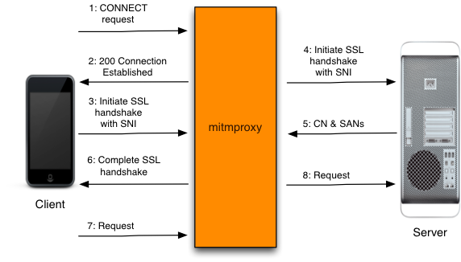
mitmproxy安装
mitmproxy官网：https://mitmproxy.org/
mitmproxy安装方法参考：https://docs.mitmproxy.org/stable/overview-installation/
macOS：1
brew install mitmproxy
Linux和Windows：在官网mitmproxy.org下载安装
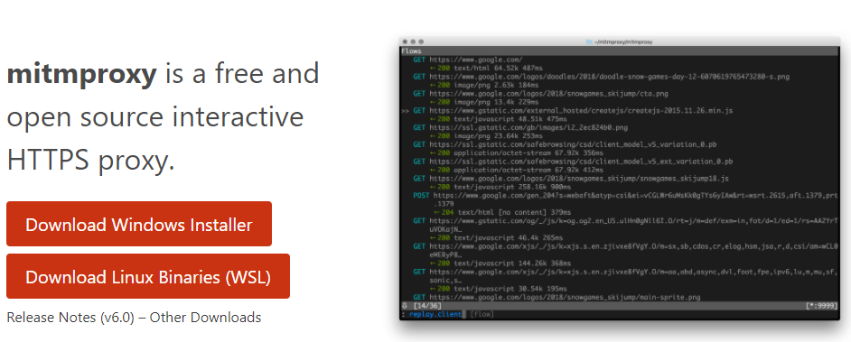
检查是否安装成功mitmdump --version1
2
3
4
5
6C:\Users\10287>mitmdump --version
Mitmproxy: 5.1.1 binary
Python: 3.7.6
OpenSSL: OpenSSL 1.1.1f 31 Mar 2020
Platform: Windows-10-10.0.18362-SP0
C:\Users\10287>
python包安装：
注意python版本 >= 3.61
2
3python3 -m pip install --user pipx
python3 -m pipx ensurepath
pipx install mitmproxy
docker 安装方法：
https://hub.docker.com/r/mitmproxy/mitmproxy/1
docker pull mitmproxy/mitmproxy
SSL 证书安装
和charles代理工具一样，如果要抓取HTTPs报文，客户端（APP 或浏览器）需要安装SSL证书。
启动服务
1
2C:\Users\10287>mitmdump -p 8999
Proxy server listening at http://*:8999浏览器设置代理
使用SwitchyOmega插件添加mitmproxy代理，代理服务器地址设置为主机IP地址，代理端口8999
SwitchyOmega插件下载地址：https://github.com/FelisCatus/SwitchyOmega/releases
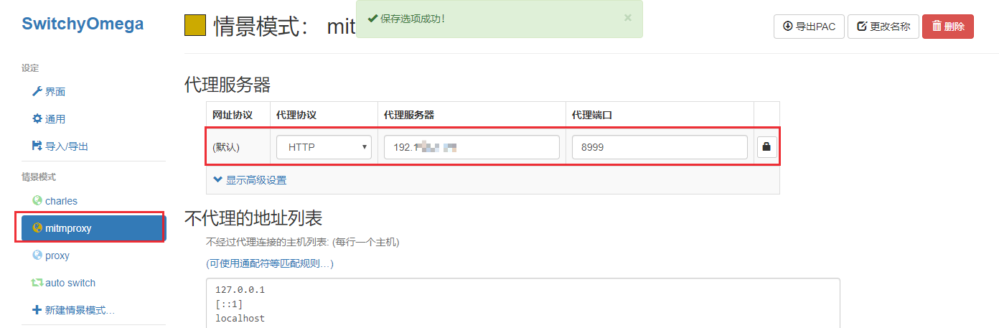
浏览器输入 mitm.it
选择对应系统的证书安装
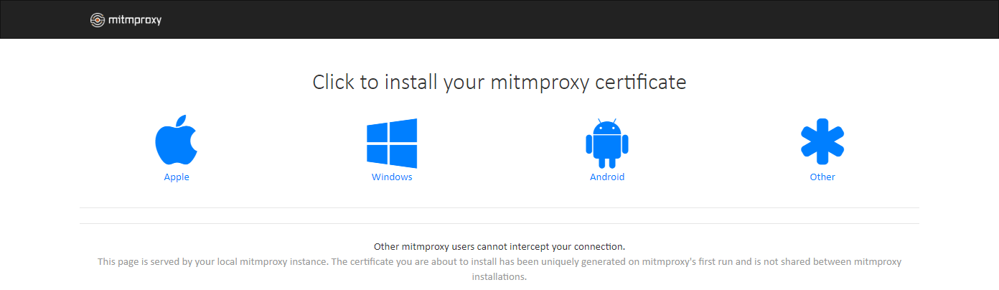手机证书安装方法同charles（地址为mitm.it）
参考 charles SSL证书安装
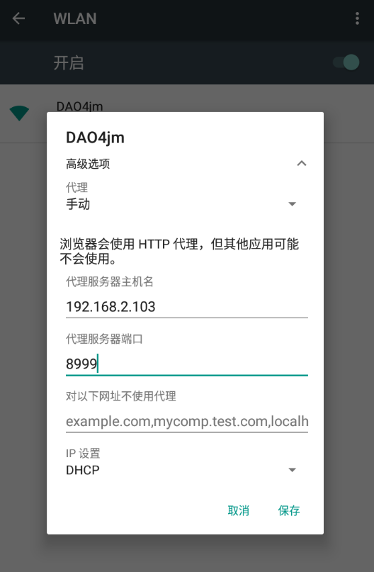
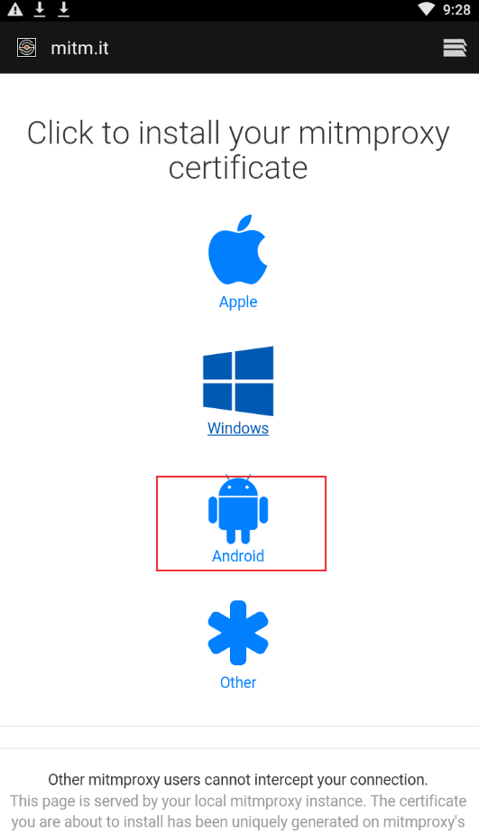
手机浏览器访问百度，命令行窗口显示https报文解析成功
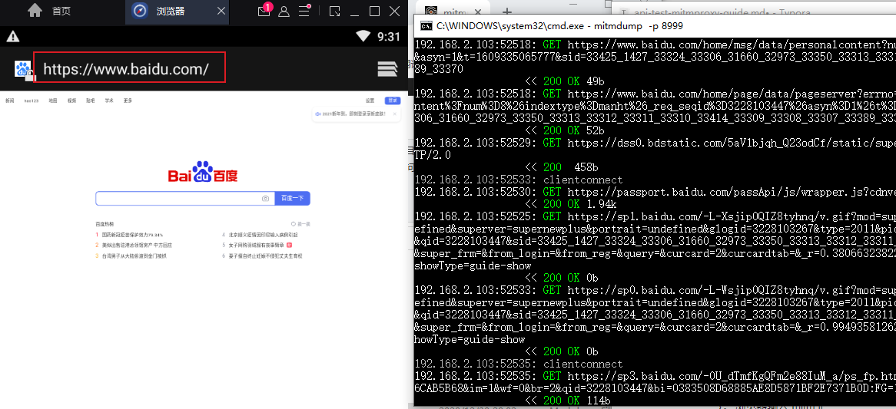
mitmproxy录制回放
录制回放参考：https://docs.mitmproxy.org/stable/tute-clientreplay/
- 开始录制，保存到文件baidusearch中
1
D:\ProgramWorkspace\TestingDemo\test_mitmproxy>mitmdump -p 8999 -w baidusearch
- 手机浏览baidu，进行百度搜索
- 停止录制：
Ctrl+c停止 - 回放
cmd命令行输入如下命令：打开生成的baidusearch文档，可以查看报文交互过程1
mitmweb -p 8999
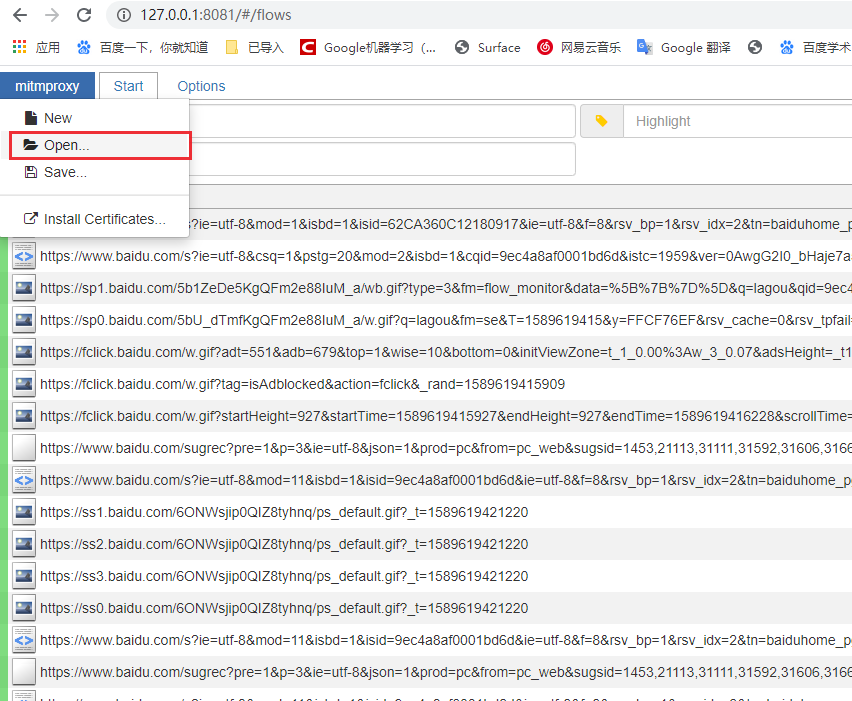
Rewrite
要求：和charles一样，修改招商银行名称及股票价格。见接口测试代理工具charles mock测试
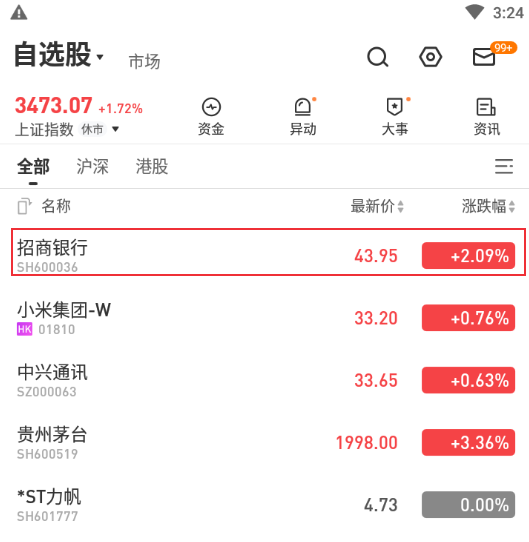
启动 mitmproxy 服务
1
2C:\Users\10287>mitmdump -p 8999
Proxy server listening at http://*:8999手机（或者模拟器）安装ssl证书，设置代理
见 charles SSL证书安装抓取雪球APP行情页面数据包
1
2
3C:\Users\10287>mitmweb -p 8999
Web server listening at http://127.0.0.1:8081/
Proxy server listening at http://*:8999开启抓包后，刷新雪球APP行情页面，找到行情页面报文，查看URL特征，用于下一步写脚本来找到它。
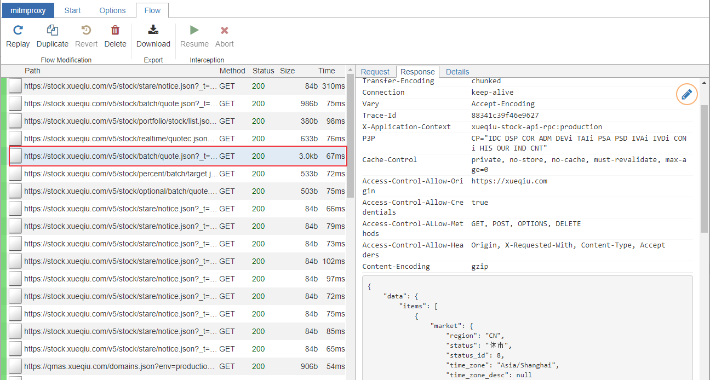写一个脚本处理响应数据：
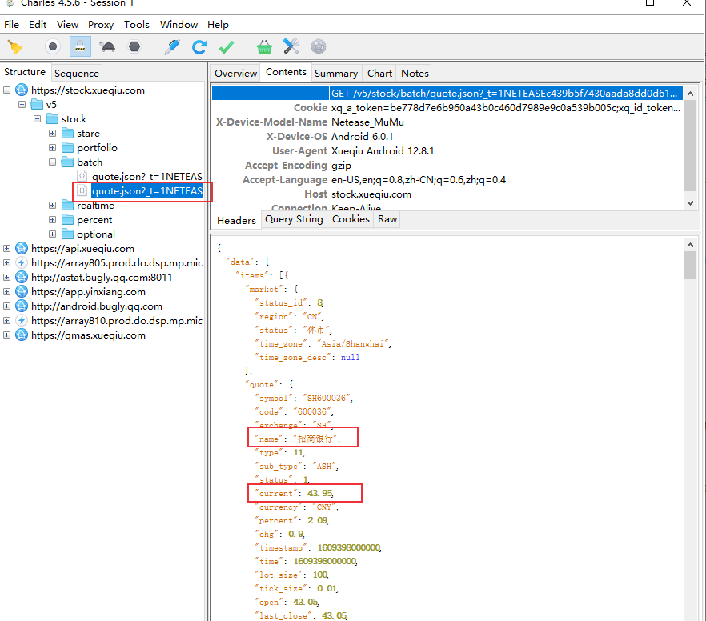
test_mitmproxy_response.py1
2
3
4
5
6
7
8
9
10
11
12
13
14
15#!/usr/bin/python3
#-*-coding:utf-8-*-
import json
def response(flow):
"""
1. 找到行情页面相关URL
2. 修改第一条记录（招商银行）的名称和股票价格
3. 将数据写入响应数据中
"""
if "quote.json" in flow.request.pretty_url and "x=" in flow.request.pretty_url:
data = json.loads(flow.response.content)
data['data']['items'][0]['quote']['name'] = data['data']['items'][0]['quote']['name'] + "test"
data['data']['items'][0]['quote']['current'] = '50'
flow.response.text = json.dumps(data)运行脚本
1
D:\ProgramWorkspace\TestingDemo\test_mitmproxy>mitmdump -p 8999 -s test_mitmproxy_response.py
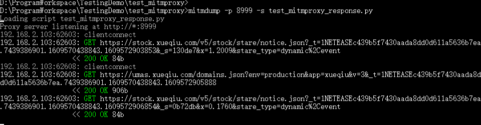
刷新雪球APP行情页面
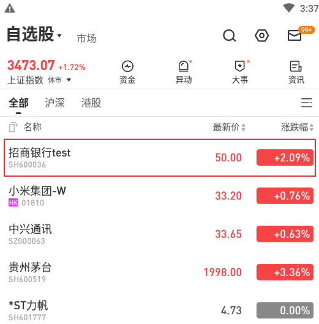
修改成功
Map Local
要求和接口测试代理工具charles mock测试一样，我们直接使用数据倍增后的数据stock2.json，如果要实现自动化，可以使用python脚本对响应数据进行处理。
股票数据可以在上一节Rewrite 第3步中直接保存，或者通过charles获取数据。
参考官方文档提供的mitmproxy插件http-reply-from-proxy.py：https://docs.mitmproxy.org/stable/addons-examples/#http-reply-from-proxy ，
编写响应数据处理脚本test_request.py
1
2
3
4
5
6
7
8
9
10
11
12
13
14
15
16#!/usr/bin/python3
#-*-coding:utf-8-*-
"""Send a reply from the proxy without sending any data to the remote server."""
from mitmproxy import http
def request(flow: http.HTTPFlow) -> None:
if "quote.json" in flow.request.pretty_url and "x=" in flow.request.pretty_url:
with open("D:/ProgramWorkspace/TestingDemo/test_mitmproxy/stock2.json",encoding="utf-8") as f:
flow.response = http.HTTPResponse.make(
200, # (optional) status code
f.read(), # (optional) content
{"Content-Type": "application/json"} # (optional) headers
)开启服务，运行脚本
1
2
3D:\ProgramWorkspace\TestingDemo\test_mitmproxy>mitmdump -p 8999 -s test_request.py
Loading script test_request.py
Proxy server listening at http://*:8999- 刷新雪球APP行情页面
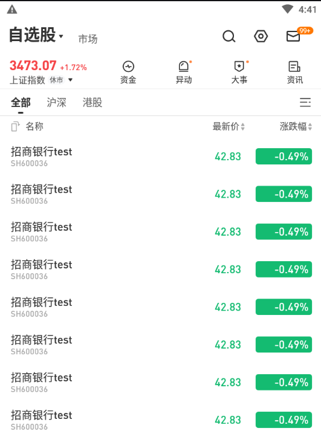
修改成功
开启服务后，可以直接修改stock2.json内容，不需要重新拉起
本文标题:mitmproxy 代理工具介绍：rewrite和map local实现
文章作者:hiyo
文章链接:https://hiyongz.github.io/posts/api-test-mitmproxy-guide/
许可协议:本博客文章除特别声明外，均采用CC BY-NC-ND 4.0 许可协议。转载请保留原文链接及作者。